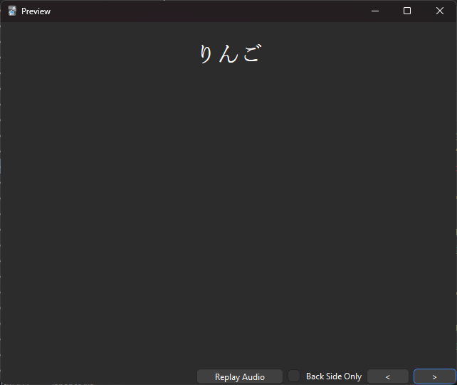
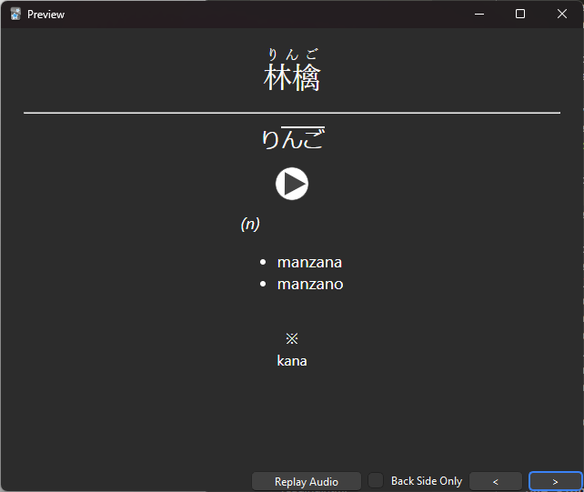

La primera carta del mazo es こんにちは. Si esta no es la primera carta que ves, ajusta el orden de cartas nuevas siguiendo estos pasos:
Abre el buscador de cartas.
Filtra las cartas por el campo "Mazo."
Selecciona todas las cartas.
Ve a Cartas > Reposicionar.
Da clic en OK.
¡Listo! Revisa que el campo de "Pendiente" de la carta こんにちは sea "Nuevas #0", y verifícalo estudiando el mazo.
Estructura del tipo de carta
Anverso

Muestra la palabra en kanji, si la palabra lo usa.
Inverso

Muestra:
La lectura en furigana.
Un diagrama de su acento tonal.
Audio de su pronunciación nativa, que se puede reproducir presionando el botón.
Una o más etiquetas sobre la palabra.
Un glosario de definiciones.
Algunas cartas contienen notas relevantes, colocadas debajo del signo ※.
Recomendaciones para estudiar
Solo basta con recordar uno de los significados de la palabra, o bien algún sinónimo, o tener una buena idea de lo que significa.
No es necesario memorizar acento tonal, etiquetas ni notas. Únicamente sirven como información de referencia.
Se recomienda solo usar los botones de "Bien" y "Otra vez" (ignorando los de "Fácil" y "Difícil"). Si la palabra fue recordada, sin importar su dificultad, se presiona "Bien". Si no fue recordada, sin importar qué, se presiona "Otra vez".
Estudiar diariamente. El número de cartas nuevas diarias puede modificarse para adaptarse a la rutina particular de cada quien. Lo recomendable son 10 cartas nuevas diarias.
Abreviaciones de etiquetas
adj-i. Adjetivo い
adj-na. Adjetivo な
adj-no. Adjetivo の
adv. Adverbio
aux. Auxiliar
aux-v. Verbo auxiliar
conj. Conjugación
cop. Cópula
ctr. Contador
exp. Expresión
int. Interjección
kana. Generalmente escrito con kana
n. Sustantivo
n-pref. Sustantivo usado como prefijo
n-suf. Sustantivo usado como sufijo
num. Numérico
pref. Prefijo
prt. Partícula
pn. Pronombre
suf. Sufijo
tmb. También
vi. Verbo intransitivo
vk. Verbo 来る (caso especial)
vn. Verbo con la terminación irregular ぬ
vt. Verbo transitivo
vs. Verbo する
vs-i. Verbo する incluido
v1. Verbo Ichidan
v5b. Verbo Godan con terminación en ぶ
v5g. Verbo Godan con terminación en ぐ
v5k. Verbo Godan con terminación en く
v5k-s. Verbo Godan con terminación en く (caso especial 行く)